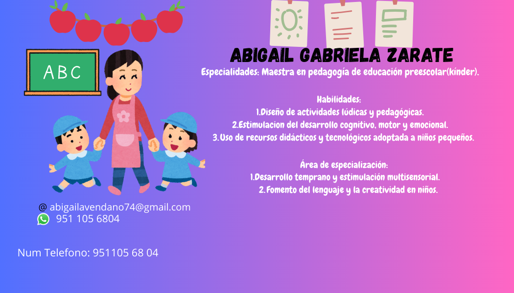
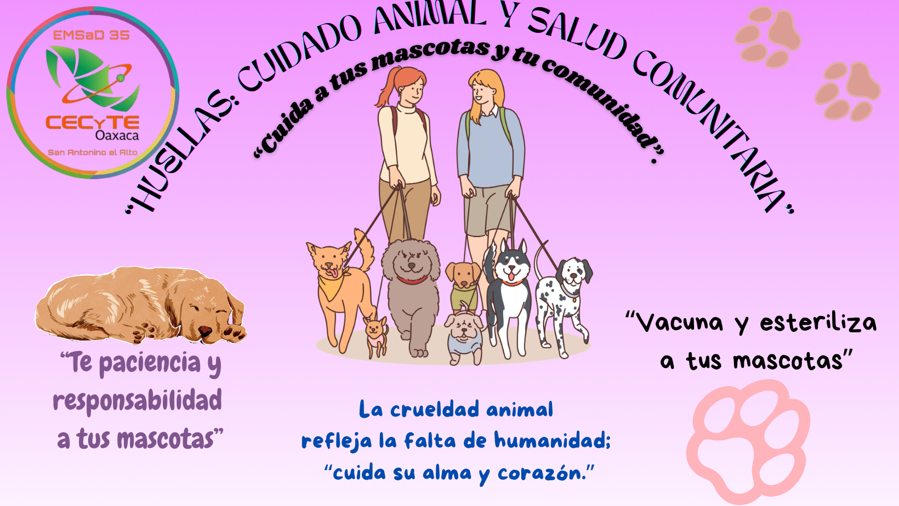

Hola, mi nombre es Abigail.
Soy estudiante en el CECYCTEO-35.
Me gusta la tecnología y aprender sobre computación.

Este proyecto busca promover el cuidado responsable de los perros en la comunidad de San Antonino el Alto.
La problemática principal es la presencia de perros en la vía pública, muchos de ellos sin esterilizar o sin vacunas.
A través de este proyecto se busca crear conciencia sobre el bienestar animal y la salud comunitaria.